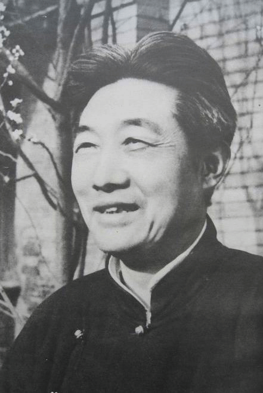
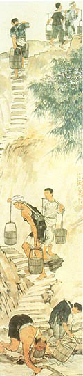
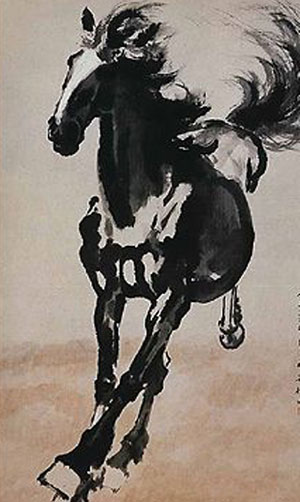
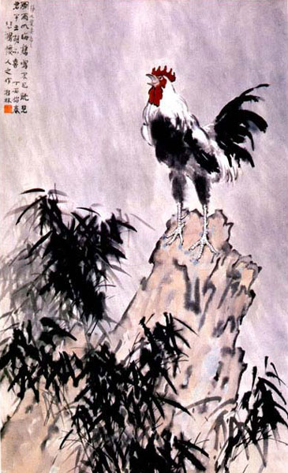
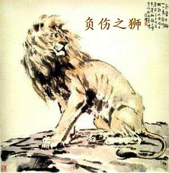
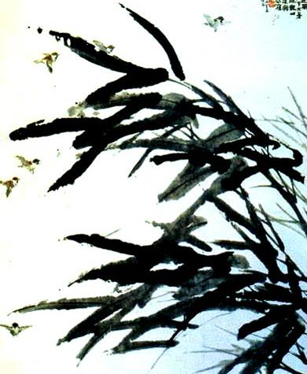
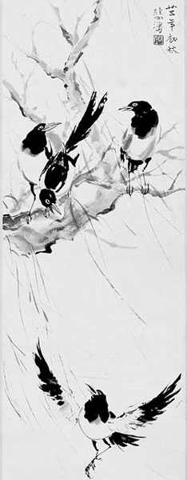
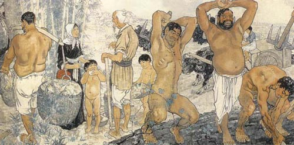

烽火中的丹青画卷
--徐悲鸿抗战艺术欣赏

在抗战的大背景之下
徐悲鸿堪称抗战岁月的艺术战士
他以艺术为人民服务的精神
拿着画笔加入抗战
为大时代奔走 、呼号

《巴人汲水图》
创作于1938年抗日战争时期
是真实记录普遍民众阶层
生存景象的艺术珍品
被誉为徐悲鸿最具人民性
和时代精神的代表作

奔马图
作于1941年秋季
抗日战争正处于战略相持阶段
此时正在马来西亚槟榔屿办艺
展募捐的徐悲鸿听闻国难当头
心急如焚连夜画出《奔马图》
以抒发自己的忧急之情

《风雨鸡鸣图》
作于1937年
一只公鸡在风雨中引吭高歌
其寓意是唤起人民奋起抗战
是徐悲鸿将现实主义与
革命浪漫主义结合的杰作

1938年，中国的抗战形式愈加紧张
中国被称作东方的“睡狮”
被日本帝国主义侵占了东北大部分国土
“睡狮”已成为负伤之狮
双目怒视的负伤雄狮在不堪回首的神情
准备战斗、拼搏，蕴藏着坚强与力量

《逆风图》
1936年创作
以迎风奋飞的雀群体现
了一种奋发向上的思想感情
毛泽东同志曾称赞这幅作品
“很有思想，很有时代感”

《四喜图》
创作于1936年初秋
是幅令人观后难以忘怀的不朽之作
当时毛泽东领导的中国工农红军
在陕北瓦窑堡召开了政治会议
提出了抗日战争的任务和策略
《愚公移山图》

1939年至1940年
应印度大诗人泰戈尔之邀
徐悲鸿赴印度举办画展宣传抗日
《愚公移山》是当时他
最重要的艺术成果